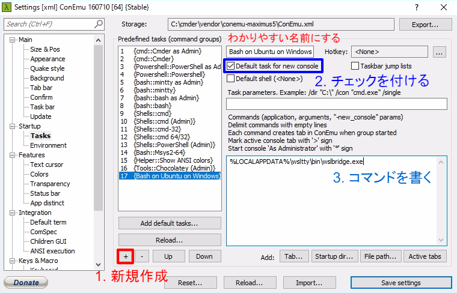
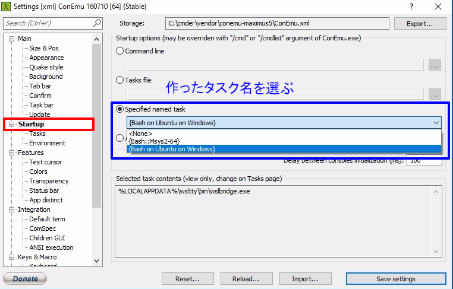

環境構築 | Bash on Ubuntu on Windows
Windows 10 から，Bash on Ubuntu on Windows (Windows Subsystem for Linux) が使えるようになりました． Ubuntu ベースの Linux 環境が使えるようになります． （Windows 10 以外のひとは，MSYS2 をインストールしてください）
インストール
Tech TIPS：Windows 10のLinux／Ubuntu互換環境でbashを使う - ＠IT が参考になります． この記事に沿って "bashコマンドを起動して環境をセットアップする" まで 進めてください．
wslbridge
Bash on Ubuntu on Windows をそのまま使うと，日本語を使うときに若干問題が生じます． それを回避するツールが wslbridge です．
wslbridge の導入に wsltty installer を使います． wsltty installer の Latest release にある wsltty-x.x.x-install.exe （x.x.x にはバージョン名）をダウンロードします．
今回は Cmder を使うため，インストールが終わったら， 付属した mintty をアンインストール します．
Win + R を押し， %LOCALAPPDATA%\wsltty\uninstall.bat を実行してください．
Cmder の設定
次の手順で設定します．
- 設定画面を出す
- タイトルバー右クリック
- Settings
- Startup - Tasks
+ボタンで新規作成Default task for new consoleにチェックを付ける- コマンド欄に
%LOCALAPPDATA%\wsltty\bin\wslbridge.exeと書く - 設定画面を切り替える
- Startup
- 作ったタスク名を選ぶ
- Cmder を再起動する
 
Bash on Ubuntu on Windows の設定
Windows ユーザ名は， Win + R のあとに cmd /c "echo %USERNAME% && pause" を実行するとわかります．
### {YourUserName} は自分の Windows ユーザ名に置き換える ###
# /etc/hosts の設定
$ sudo sh -c 'echo 127.0.1.1 $(hostname) >> /etc/hosts'
# （任意）HOME の変更
$ cp ~/.* /mnt/c/Users/{YourUserName}
$ sed /etc/passwd -e "s#/home/${USER}#/mnt/c/Users/{YourUserName}#"
一旦 Cmder を再起動する．
# force_color_prompt
$ sed -i ~/.bashrc -e 's/#force_color_prompt=yes/force_color_prompt=yes/'
# ~/.bash_aliases の設定
$ echo "alias ls='ls --color=auto --ignore={ntuser*,NTUSER*}'" >> ~/.bash_aliases
$ exec $SHELL -l